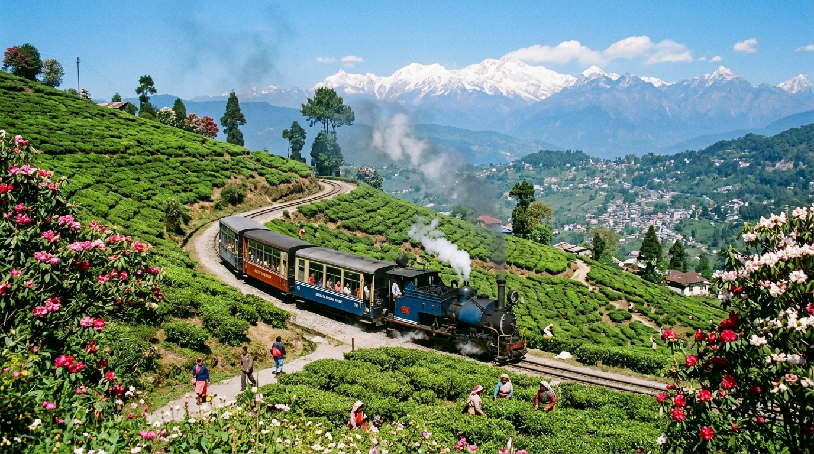

👋 Common Nepali Greetings & Verified Audio
Click the pronunciation button to hear authentic greetings spoken in the Nepali tongue with verified phonetic transcripts.
📜 The Devanagari Script (देवनागरी)
Nepali is written in Devanagari, a refined phonetic script characterized by horizontal top lines (Shirorekha) and distinct consonant-vowel combinations.
Primary Vowels (स्वर वर्ण) — Click any letter to listen
Interactive phonetic chart showing Nepali vowel glyphs, Roman transliteration, and IPA notation:
Shirorekha (Top Hanging Line)
The distinct horizontal line connecting letters in a word, giving Devanagari its graceful, structured appearance.
Elaborate Honorific Tiering
Nepali syntax encodes social respect into verb conjugations across 4 primary tiers: Hajur (highest), Tapāī̃ (formal), Timi (familiar), and Tā̃ (intimate).
Phonetic Regularity
Words are pronounced exactly as spelled, making reading consistent once individual letters and diacritics are understood.
Rich Conjuncts (Samyuktākṣara)
Complex consonant clusters like क्ष (kṣa), त्र (tra), and ज्ञ (gya) elegantly merge individual phonemes into single glyphs.
🗣️ Common Nepali Words & Transliteration
Essential everyday Nepali vocabulary, accompanied by English meanings, phonetic annotations, and individual pronunciation audio.
🌳 Indo-Aryan Language Family
Understanding Nepali's genealogical descent from Sanskrit through Khas Prakrit and its connection with Pahari sister languages.
Nepali is a prominent member of the Northern Zone (Pahari) branch of Indo-Aryan languages. It developed as the lingua franca across the central and eastern Himalayas, sharing deep structural and lexical cognates with Sanskrit and other major North Indian tongues.
Sister & Cognate Languages:
Distinctive Linguistic Traits:
📍 Major Indian Regions Where Nepali Is Spoken
Nepali holds official constitutional standing in India under the Eighth Schedule and serves as an official language in key Himalayan territories.

📚 Literary & Cultural Heritage in India
From Adikavi Bhanubhakta's Ramayana recitations to Sahitya Akademi laureates and vibrant Himalayan celebrations like Dashain and Tihar.
📑 Sources & Academic References
All demographic, linguistic, and constitutional records are drawn from verified national archives and linguistic databases.